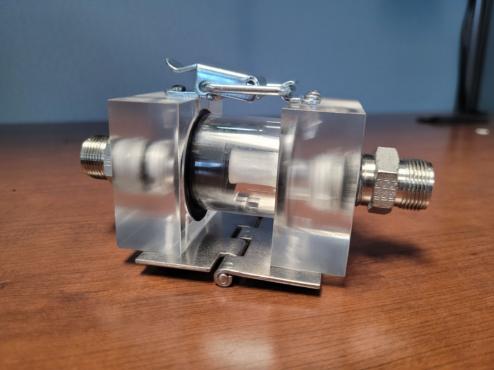

The purpose was to develop a test fixture to examine membrane differential pressure and produce a core design that would best minimize that differential pressure. CAD and workshop competence were utilized throughout the development of this mechanism. The end result was a core design that best satisfies the necessary criteria and will eventually be used in the final form of this developing product.